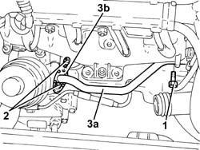
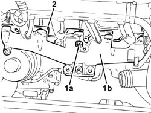
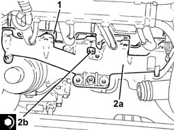

1072C10 exhaust manifold - r + r and replace seal
- Path
- Procedures > 10 ENGINE UNIT > 1072 INLET AND EXHAUST MANIFOLDS > 1072C exhaust manifolds > 1072C10 exhaust manifold - r + r and replace seal
- Kind
- repair procedure (removal / refitting; the operation number is the code)
- Applies to
- engines: 1.3 JTD 16v; all production periods
- Interactive page
- https://sloeber94.github.io/elrnDB-fPnd/en/#/2752618
Applies to: engines: 1.3 JTD 16v; all production periods
 Removing
Removing
 Refitting
RefittingRemove the car from the ramps.
Disconnect the battery negative terminal.
1064A11 TURBOCHARGER with CATALYTIC CONVERTER - R.R.
1. Undo the bolt securing the coolant inlet pipe to the engine oil heat exchanger, engine block side.
2. Undo the bolts fixing the coolant supply pipe to the engine oil heat exchanger, heat exchange side.
3. Move aside the pipe carrying coolant to the engine oil heat exchanger (3a) complete with seal (3b).

Applies to: engines: 1.3 JTD 16v; all production periods
1. Undo the nuts (1a) and remove the exhaust manifold (1b).
2. Remove the exhaust manifold gasket.

Applies to: engines: 1.3 JTD 16v; all production periods
Refitting
Removing1. Fit a new exhaust manifold gasket in place.
2. Fit the exhaust manifold (2a) in place and secure it tightening the nuts (2b) to the recommended torque.
 | Fastening | Component | Ø | Value (daNm) |
|---|---|---|---|---|
2b | Nut | EXHAUST MANIFOLD/S | M8 | (Lower cylinder head side) 2.1 ÷ 2.5 |

Applies to: engines: 1.3 JTD 16v; all production periods
Fit the coolant inlet pipe to the engine oil heat exchanger complete with gasket in place and secure it to the engine oil heat exchanger using the bolts.
Tighten the coolant inlet hose bolt to the engine oil heat exchanger, crankcase side.
1064A11 TURBOCHARGER with CATALYTIC CONVERTER - R.R.
Connect the battery negative terminal.
Remove the car from the ramps.